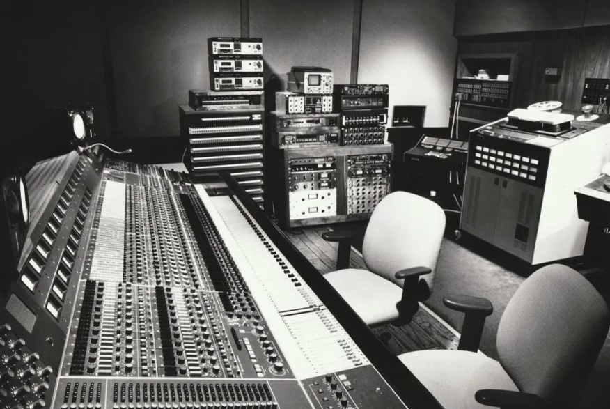

The Disappearing Song Structure
There was a time when listening to a popular song felt like embarking on a deliberate journey describing a story like a good book you don't want to put down. You’d start with a slow-burn instrumental intro, follow a narrative through several verses, and wait for that cathartic bridge before the final resolution. It was a structural arc that gave artists room to breathe, experiment, and build an emotional payoff. But if you’ve noticed that today’s hits feel more like a sprint than a marathon, you aren't imagining things honestly just listening to the same thing over and over. In our current streaming-dominated world, traditional music is being replaced by the "instant hook."
Platforms like Spotify, a stream is only earn revenue once a listener hits the 30-second mark. This has turned the opening moments of a song into high-stakes real estate. In the mid-1990s, a hit song averaged around four minutes, often taking its time to set a mood. Today, that average has plummeted. By the early 2020s, chart-toppers began hovering around two and a half minutes with some songs barely cracking the two-minute ceiling.
Data from the Billboard Hot 100 illustrates just how dramatic this shift has been. In the mid-1990s, the average length of a hit song hovered just above four minutes. By the mid-2000s, that average began to decline slightly, but the most significant drop has occurred in the streaming era. By the early 2020s, many chart-topping songs averaged closer to two-and-a-half minutes, with some dipping below the two-minute mark entirely.
As a result, artists are incentivized to design songs that reach their most engaging moments as quickly as possible. Long intros, once a staple of genres like rock and R&B, have largely disappeared from mainstream hits. Instead, songs often begin with vocals or a chorus, immediately signaling what the listener can expect.
Beyond intros, other structural elements have also been affected. The bridge—a section traditionally used to introduce contrast or emotional depth—is becoming less common in modern pop music. Instrumental solos, particularly guitar solos that were once a defining feature of many hit songs, are now rare. Outros have also been shortened or eliminated entirely, with many songs ending abruptly after the final chorus.
